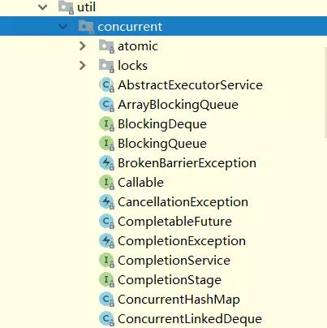
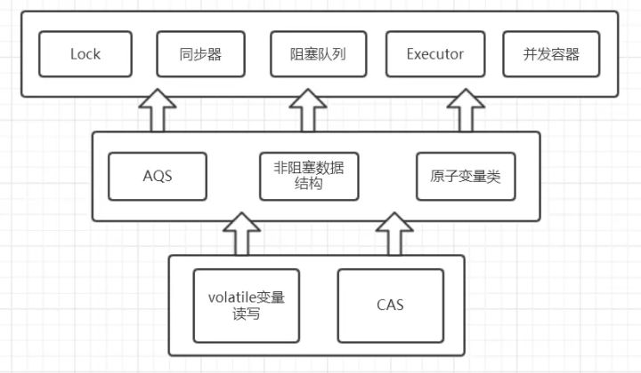
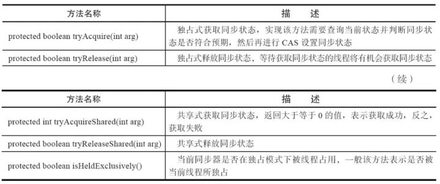
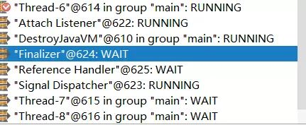

本人免费整理了Java高级资料，涵盖了Java、Redis、MongoDB、MySQL、Zookeeper、Spring Cloud、Dubbo高并发分布式等教程，一共30G，需要自己领取。
传送门：https://mp.weixin.qq.com/s/JzddfH-7yNudmkjT0IRL8Q
1. concurrent包的结构层次
在针对并发编程中，Doug Lea大师为我们提供了大量实用，高性能的工具类，针对这些代码进行研究会让我们队并发编程的掌握更加透彻也会大大提升我们队并发编程技术的热爱。这些代码在java.util.concurrent包下。如下图，即为concurrent包的目录结构图。

其中包含了两个子包：atomic以及lock，另外在concurrent下的阻塞队列以及executors,这些就是concurrent包中的精华，之后会一一进行学习。而这些类的实现主要是依赖于volatile以及CAS（关于volatile可以看这篇文章，关于CAS可以看这篇文章的3.1节），从整体上来看concurrent包的整体实现图如下图所示：

2. lock简介
我们下来看concurent包下的lock子包。锁是用来控制多个线程访问共享资源的方式，一般来说，一个锁能够防止多个线程同时访问共享资源。在Lock接口出现之前，java程序主要是靠synchronized关键字实现锁功能的，而java SE5之后，并发包中增加了lock接口，它提供了与synchronized一样的锁功能。**虽然它失去了像synchronize关键字隐式加锁解锁的便捷性，但是却拥有了锁获取和释放的可操作性，可中断的获取锁以及超时获取锁等多种synchronized关键字所不具备的同步特性。**通常使用显示使用lock的形式如下：
Lock lock = new ReentrantLock();
lock.lock();
try{
.......
}finally{
lock.unlock();
}
需要注意的是synchronized同步块执行完成或者遇到异常是锁会自动释放，而lock必须调用unlock()方法释放锁，因此在finally块中释放锁。
2.1 Lock接口API
我们现在就来看看lock接口定义了哪些方法：
void lock(); //获取锁 void lockInterruptibly() throws InterruptedException；//获取锁的过程能够响应中断 boolean tryLock();//非阻塞式响应中断能立即返回，获取锁放回true反之返回fasle boolean tryLock(long time, TimeUnit unit) throws InterruptedException;//超时获取锁，在超时内或者未中断的情况下能够获取锁 Condition newCondition();//获取与lock绑定的等待通知组件，当前线程必须获得了锁才能进行等待，进行等待时会先释放锁，当再次获取锁时才能从等待中返回
上面是lock接口下的五个方法，也只是从源码中英译中翻译了一遍，感兴趣的可以自己的去看看。那么在locks包下有哪些类实现了该接口了？先从最熟悉的ReentrantLock说起。
public class ReentrantLock implements Lock, java.io.Serializable
很显然ReentrantLock实现了lock接口，接下来我们来仔细研究一下它是怎样实现的。当你查看源码时你会惊讶的发现ReentrantLock并没有多少代码，另外有一个很明显的特点是：基本上所有的方法的实现实际上都是调用了其静态内存类Sync中的方法，而Sync类继承了AbstractQueuedSynchronizer（AQS）。可以看出要想理解ReentrantLock关键核心在于对队列同步器AbstractQueuedSynchronizer（简称同步器）的理解。
2.2 初识AQS
关于AQS在源码中有十分具体的解释：
Provides a framework for implementing blocking locks and related
synchronizers (semaphores, events, etc) that rely on
first-in-first-out (FIFO) wait queues. This class is designed to
be a useful basis for most kinds of synchronizers that rely on a
single atomic {@code int} value to represent state. Subclasses
must define the protected methods that change this state, and which
define what that state means in terms of this object being acquired
or released. Given these, the other methods in this class carry
out all queuing and blocking mechanics. Subclasses can maintain
other state fields, but only the atomically updated {@code int}
value manipulated using methods {@link #getState}, {@link
#setState} and {@link #compareAndSetState} is tracked with respect
to synchronization.
<p>Subclasses should be defined as non-public internal helper
classes that are used to implement the synchronization properties
of their enclosing class. Class
{@code AbstractQueuedSynchronizer} does not implement any
synchronization interface. Instead it defines methods such as
{@link #acquireInterruptibly} that can be invoked as
appropriate by concrete locks and related synchronizers to
implement their public methods.
同步器是用来构建锁和其他同步组件的基础框架，它的实现主要依赖一个int成员变量来表示同步状态以及通过一个FIFO队列构成等待队列。它的子类必须重写AQS的几个protected修饰的用来改变同步状态的方法，其他方法主要是实现了排队和阻塞机制。状态的更新使用getState,setState以及compareAndSetState这三个方法。
子类被推荐定义为自定义同步组件的静态内部类，同步器自身没有实现任何同步接口，它仅仅是定义了若干同步状态的获取和释放方法来供自定义同步组件的使用，同步器既支持独占式获取同步状态，也可以支持共享式获取同步状态，这样就可以方便的实现不同类型的同步组件。
同步器是实现锁（也可以是任意同步组件）的关键，在锁的实现中聚合同步器，利用同步器实现锁的语义。可以这样理解二者的关系：锁是面向使用者，它定义了使用者与锁交互的接口，隐藏了实现细节；同步器是面向锁的实现者，它简化了锁的实现方式，屏蔽了同步状态的管理，线程的排队，等待和唤醒等底层操作。锁和同步器很好的隔离了使用者和实现者所需关注的领域。
2.3 AQS的模板方法设计模式
AQS的设计是使用模板方法设计模式，它将一些方法开放给子类进行重写，而同步器给同步组件所提供模板方法又会重新调用被子类所重写的方法。举个例子，AQS中需要重写的方法tryAcquire：
protected boolean tryAcquire(int arg) {
throw new UnsupportedOperationException();
}
ReentrantLock中NonfairSync（继承AQS）会重写该方法为：
protected final boolean tryAcquire(int acquires) {
return nonfairTryAcquire(acquires);
}
而AQS中的模板方法acquire():
public final void acquire(int arg) {
if (!tryAcquire(arg) &&
acquireQueued(addWaiter(Node.EXCLUSIVE), arg))
selfInterrupt();
}
会调用tryAcquire方法，而此时当继承AQS的NonfairSync调用模板方法acquire时就会调用已经被NonfairSync重写的tryAcquire方法。这就是使用AQS的方式，在弄懂这点后会lock的实现理解有很大的提升。可以归纳总结为这么几点：
getState(),setState(),compareAndSetState()方法进行修改同步状态AQS可重写的方法如下图（摘自《java并发编程的艺术》一书）：

在实现同步组件时AQS提供的模板方法如下图：
AQS提供的模板方法可以分为3类：
同步组件通过AQS提供的模板方法实现自己的同步语义。
3. 一个例子
下面使用一个例子来进一步理解下AQS的使用。这个例子也是来源于AQS源码中的example。
class Mutex implements Lock, java.io.Serializable {
// Our internal helper class
// 继承AQS的静态内存类
// 重写方法
private static class Sync extends AbstractQueuedSynchronizer {
// Reports whether in locked state
protected boolean isHeldExclusively() {
return getState() == 1;
}
// Acquires the lock if state is zero
public boolean tryAcquire(int acquires) {
assert acquires == 1; // Otherwise unused
if (compareAndSetState(0, 1)) {
setExclusiveOwnerThread(Thread.currentThread());
return true;
}
return false;
}
// Releases the lock by setting state to zero
protected boolean tryRelease(int releases) {
assert releases == 1; // Otherwise unused
if (getState() == 0) throw new IllegalMonitorStateException();
setExclusiveOwnerThread(null);
setState(0);
return true;
}
// Provides a Condition
Condition newCondition() {
return new ConditionObject();
}
// Deserializes properly
private void readObject(ObjectInputStream s)
throws IOException, ClassNotFoundException {
s.defaultReadObject();
setState(0); // reset to unlocked state
}
}
// The sync object does all the hard work. We just forward to it.
private final Sync sync = new Sync();
//使用同步器的模板方法实现自己的同步语义
public void lock() {
sync.acquire(1);
}
public boolean tryLock() {
return sync.tryAcquire(1);
}
public void unlock() {
sync.release(1);
}
public Condition newCondition() {
return sync.newCondition();
}
public boolean isLocked() {
return sync.isHeldExclusively();
}
public boolean hasQueuedThreads() {
return sync.hasQueuedThreads();
}
public void lockInterruptibly() throws InterruptedException {
sync.acquireInterruptibly(1);
}
public boolean tryLock(long timeout, TimeUnit unit)
throws InterruptedException {
return sync.tryAcquireNanos(1, unit.toNanos(timeout));
}
}
MutexDemo：
public class MutextDemo {
private static Mutex mutex = new Mutex();
public static void main(String[] args) {
for (int i = 0; i < 10; i++) {
Thread thread = new Thread(() -> {
mutex.lock();
try {
Thread.sleep(3000);
} catch (InterruptedException e) {
e.printStackTrace();
} finally {
mutex.unlock();
}
});
thread.start();
}
}
}
执行情况：

上面的这个例子实现了独占锁的语义，在同一个时刻只允许一个线程占有锁。MutexDemo新建了10个线程，分别睡眠3s。从执行情况也可以看出来当前Thread-6正在执行占有锁而其他Thread-7,Thread-8等线程处于WAIT状态。
按照推荐的方式，Mutex定义了一个继承AQS的静态内部类Sync,并且重写了AQS的tryAcquire等等方法，而对state的更新也是利用了setState(),getState()，compareAndSetState()这三个方法。
在实现实现lock接口中的方法也只是调用了AQS提供的模板方法（因为Sync继承AQS）。从这个例子就可以很清楚的看出来，在同步组件的实现上主要是利用了AQS，而AQS“屏蔽”了同步状态的修改，线程排队等底层实现，通过AQS的模板方法可以很方便的给同步组件的实现者进行调用。
而针对用户来说，只需要调用同步组件提供的方法来实现并发编程即可。同时在新建一个同步组件时需要把握的两个关键点是：
通俗点说，因为AQS整体设计思路采用模板方法设计模式，同步组件以及AQS的功能实际上别切分成各自的两部分：
同步组件实现者的角度：
通过可重写的方法：
独占式： tryAcquire()(独占式获取同步状态），tryRelease()（独占式释放同步状态）；
共享式 ：tryAcquireShared()(共享式获取同步状态)，tryReleaseShared()(共享式释放同步状态)；告诉AQS怎样判断当前同步状态是否成功获取或者是否成功释放。
同步组件专注于对当前同步状态的逻辑判断，从而实现自己的同步语义。这句话比较抽象，举例来说，上面的Mutex例子中通过tryAcquire方法实现自己的同步语义，在该方法中如果当前同步状态为0（即该同步组件没被任何线程获取），当前线程可以获取同时将状态更改为1返回true，否则，该组件已经被线程占用返回false。
很显然，该同步组件只能在同一时刻被线程占用，Mutex专注于获取释放的逻辑来实现自己想要表达的同步语义。
AQS的角度
而对AQS来说，只需要同步组件返回的true和false即可，因为AQS会对true和false会有不同的操作，true会认为当前线程获取同步组件成功直接返回，而false的话就AQS也会将当前线程插入同步队列等一系列的方法。
总的来说，同步组件通过重写AQS的方法实现自己想要表达的同步语义，而AQS只需要同步组件表达的true和false即可，AQS会针对true和false不同的情况做不同的处理。